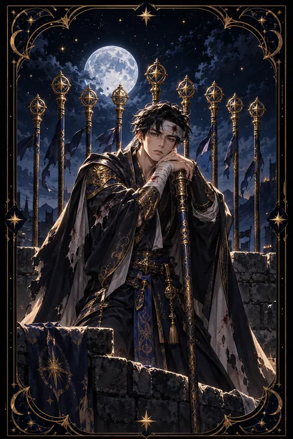

이 게시물은 쿠팡 파트너스 활동의 일환으로, 이에 따른 일정액의 수수료를 제공받습니다.


완드 9 카드 — 마지막 고비를 버티는 끈기
완드 9 카드 한눈에 보기
완드 9 카드 상징 읽기

동네보살의 카드 그림은 전통 라이더–웨이트 덱의 뜻을 새 그림으로 옮긴 것입니다. 아래 상징 설명은 전통 덱의 그림을 기준으로 합니다.
완드 9의 인물은 머리에 붕대를 감고 한 손으로 지팡이를 꽉 쥔 채 몸을 기대고 서 있습니다. 붕대는 이미 여러 차례 싸움을 치르며 입은 상처를 뜻하고 그럼에도 여전히 두 발로 서 있다는 사실은 꺾이지 않는 회복력을 보여 줍니다.
인물의 뒤편에는 여덟 개의 지팡이가 울타리처럼 가지런히 서 있습니다. 지금까지 쌓아 온 성과이자 스스로를 보호하기 위해 세운 방어선입니다. 동시에 너무 높이 쌓으면 자신을 가두는 벽이 될 수 있다는 의미도 함께 담겨 있습니다.
곁눈질로 주위를 살피는 날카로운 눈빛은 경계심과 준비된 태도를 나타냅니다. 발밑의 푸른 풀밭과 멀리 보이는 언덕은 고비만 넘기면 평온한 땅이 기다린다는 것을 알려 줍니다. 인물이 두 발로 땅을 단단히 딛고 있다는 점도 중요합니다. 지쳐 있어도 자신의 자리를 떠나지 않는 책임감과 뿌리 깊은 의지를 보여 주는 대목입니다.
완드 9 카드 정방향 뜻
정방향 완드 9는 지칠 대로 지쳤지만 아직 포기하지 않은 사람의 카드입니다. 오랜 노력 끝에 목표가 가까워졌고 지금 필요한 것은 새로운 재능이 아니라 마지막까지 버티는 힘입니다.
이 카드는 지난 실패와 상처가 쓸모없지 않았다는 사실을 알려 줍니다. 어려움을 겪으면서 어디가 위험한지 알아보는 눈이 생겼고 그 경험이 이번 고비를 넘기는 무기가 됩니다.
다만 경계심이 지나치면 도움을 주려는 사람까지 밀어낼 수 있습니다. 지켜야 할 것과 내려놓아도 되는 것을 구분하고 남은 힘을 가장 중요한 한 곳에 모으세요. 잠시 기댈 수 있는 사람을 곁에 두면 끝까지 버티는 일이 훨씬 수월해집니다. 결승선은 생각보다 가까이 있습니다. 한 번 더 일어서는 경험이 앞으로의 어떤 어려움 앞에서도 흔들리지 않는 자신감의 바탕이 됩니다.
완드 9 카드 역방향 뜻
역방향 완드 9는 버티던 힘이 바닥나 무너지기 직전인 상태를 보여 줍니다. 오랫동안 혼자 모든 것을 막아 온 탓에 몸과 마음이 동시에 지쳐 그만두고 싶다는 생각이 강해질 수 있습니다.
지난 상처가 경계심을 키워 사소한 말에도 날카롭게 반응하거나 주변 사람을 모두 의심하게 될 수 있습니다. 그런가 하면 고집이 지나쳐 이미 끝난 싸움을 붙들고 놓지 못하는 경우도 있습니다.
완드 9가 거꾸로 나온 것은 쓰러지라는 뜻이 아니라 방식을 바꾸라는 신호입니다. 모든 전선을 지키려 하지 말고 꼭 필요한 한 가지를 골라 거기에만 힘을 쓰세요. 충분히 쉬고 믿을 만한 사람에게 도움을 청하면 다시 일어설 힘이 차오릅니다. 잠시 물러나는 것도 끝까지 가기 위한 전략입니다. 몸이 회복되면 날카로웠던 마음도 차츰 누그러집니다.
연애에서 완드 9 카드
솔로라면 지난 연애에서 받은 상처 때문에 새로운 사람에게 쉽게 마음을 열지 못하는 시기일 수 있습니다. 조심하는 태도는 나쁘지 않지만 모든 사람을 예전 사람과 같은 기준으로 보면 좋은 인연도 지나칠 수 있습니다. 서두르지 않고 천천히 알아 가며 믿음을 쌓는 만남이 이 카드와 어울립니다.
오래 만나 온 연인이 있다면 관계가 시험대에 오른 때입니다. 여러 어려움을 함께 넘어왔다면 이번 고비 역시 둘이 힘을 모아 넘길 수 있습니다. 그러나 상대를 의심하며 방어적으로 대하면 거리가 벌어집니다. 불안한 마음이 들 때는 따지기보다 지금 느끼는 감정을 솔직하게 나누세요. 서로에게 기댈 자리가 되어 줄 때 관계는 전보다 단단해지고 함께 버틴 시간은 두 사람만의 자산으로 남습니다.
재회·속마음 질문에서 완드 9 카드
재회를 바라는 마음으로 이 카드를 뽑았다면 아직 포기하기엔 이르다는 뜻으로 읽을 수 있습니다. 다만 상대 역시 지난 상처로 마음의 울타리를 높이 세우고 있을 가능성이 큽니다. 단번에 예전으로 돌아가려 서두르기보다 부담 없는 거리에서 꾸준히 신뢰를 쌓아 가는 쪽이 훨씬 효과가 있습니다. 상대의 경계가 풀리기까지는 생각보다 시간이 걸릴 수 있으니 조급한 마음은 잠시 내려 두세요. 스스로도 지쳐 있다면 먼저 몸과 마음을 추스르는 시간이 필요합니다. 거꾸로 나온 경우라면 이미 너무 지친 상태이므로 잠시 멈추고 이 관계가 정말 원하는 것인지 차분히 돌아보세요.
일·금전에서 완드 9 카드
일에서는 마감 직전이나 프로젝트 막바지처럼 가장 힘든 구간을 지나는 시기입니다. 체력과 집중력이 떨어져도 지금까지 쌓은 경험이 버팀목이 되어 줍니다. 조금만 더 버티면 성과와 인정이 따라옵니다.
살림살이 쪽에서는 새로운 지출을 늘리기보다 지금 가진 것을 지키는 데 집중하는 편이 좋습니다. 비상금을 따로 떼어 두고 꼭 필요하지 않은 결제는 미뤄 두세요. 혼자 모든 업무를 떠안고 있다면 일부를 나누거나 도움을 요청하는 것도 현명한 선택입니다. 번아웃이 오기 전에 쉬는 날을 일정에 넣어 두는 것이 오래 버티는 비결입니다. 마지막 고비에서 보여 준 끈기는 다음 기회를 여는 평판으로 남습니다. 마지막 점검 목록을 따로 적어 두면 막판 실수를 크게 줄일 수 있습니다.
완드 9 카드는 예일까 아니오일까
원하는 결과에 거의 다다랐지만 마지막 고비를 넘겨야 한다는 카드라서 버틴다는 조건이 붙은 긍정에 해당합니다. 카드가 거꾸로 섰다면 힘이 바닥난 상태이므로 쉬고 전열을 가다듬은 뒤 다시 묻는 편이 좋습니다.
자주 묻는 질문
완드 9 카드 역방향은 나쁜 뜻인가요?
역방향 완드 9는 버티던 힘이 바닥나 무너지기 직전인 상태를 보여 줍니다. 오랫동안 혼자 모든 것을 막아 온 탓에 몸과 마음이 동시에 지쳐 그만두고 싶다는 생각이 강해질 수 있습니다.
완드 9 카드가 연애 질문에 나오면요?
솔로라면 지난 연애에서 받은 상처 때문에 새로운 사람에게 쉽게 마음을 열지 못하는 시기일 수 있습니다. 조심하는 태도는 나쁘지 않지만 모든 사람을 예전 사람과 같은 기준으로 보면 좋은 인연도 지나칠 수 있습니다. 서두르지 않고 천천히 알아 가며 믿음을 쌓는 만남이 이 카드와 어울립니다.
타로 카드는 어떻게 뽑나요?
타로 카드 페이지에서 78장을 섞으면 그중 22장이 펼쳐집니다. 마음이 가는 세 장을 고르면 과거·현재·미래 자리에 놓이고, 한 장씩 뒤집어 자리와 방향에 맞는 풀이를 읽습니다. 정방향과 역방향은 섞는 순간 정해집니다.